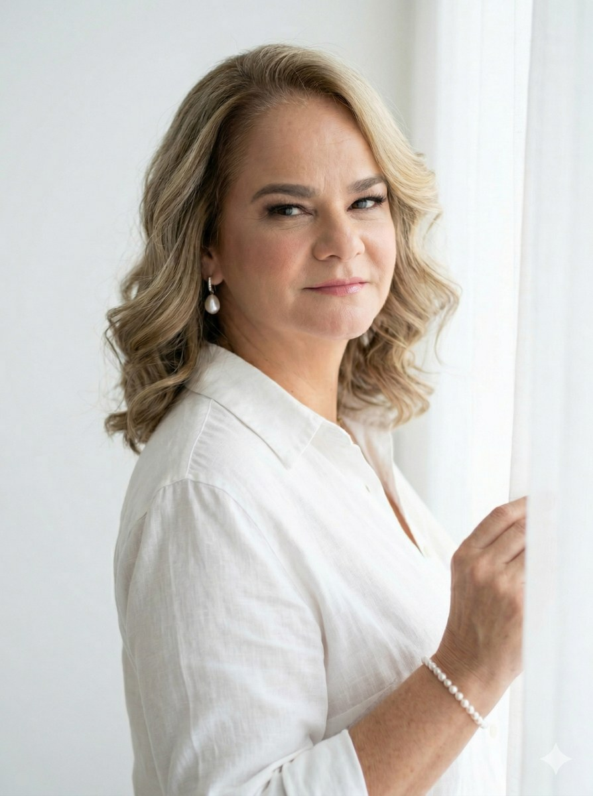
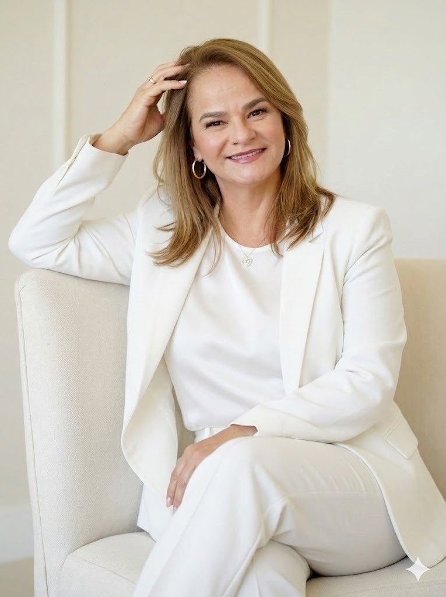
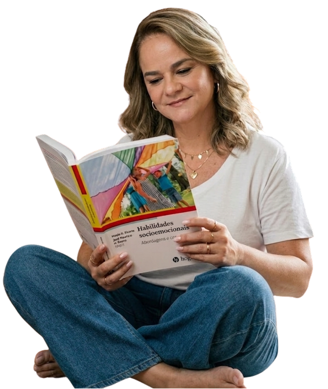
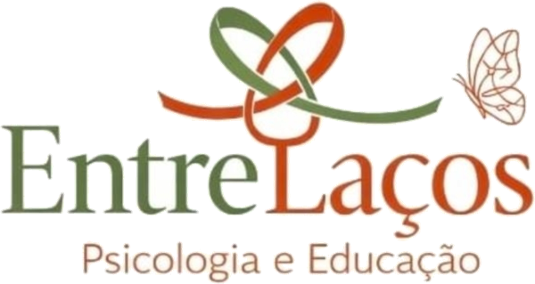

Psicoterapia
Atendimento para crianças, adolescentes e adultos, com base na Terapia do Esquema, na Teoria do Apego e nas Neurociências do Desenvolvimento.
Agende sua consulta

Psicóloga clínica e neuropsicóloga
CRP 02/10.741
Atuo no cuidado psicológico de crianças, adolescentes e famílias, oferecendo um espaço de escuta, compreensão e orientação para os desafios emocionais do desenvolvimento. Sou psicóloga clínica e neuropsicóloga, professora e palestrante, e minha trajetória integra clínica, ensino e pesquisa. Fundamento meu trabalho na Teoria do Apego, na Terapia do Esquema e nas Neurociências do Desenvolvimento, buscando construir caminhos de cuidado mais seguros, sensíveis e consistentes.
Atendimento para crianças, adolescentes e adultos, com base na Terapia do Esquema, na Teoria do Apego e nas Neurociências do Desenvolvimento.
Agende sua consulta
Acompanhamento para psicólogos e estudantes que desejam aprofundar o raciocínio clínico e conduzir seus casos com mais segurança.
Reserve sua vagaFormações sobre desenvolvimento infantil, vínculos, orientação parental, saúde emocional e desafios contemporâneos.


Conheça a EntreLaços
Um espaço de cuidado, formação e desenvolvimento humano, que reúne psicoterapia, neuropsicologia, supervisão e conteúdos embasados na ciência das relações, da parentalidade e da saúde emocional.
Acredito que vínculos seguros transformam o desenvolvimento. Por isso, ofereço orientações acolhedoras e fundamentadas na ciência para fortalecer relações e favorecer o desenvolvimento emocional.